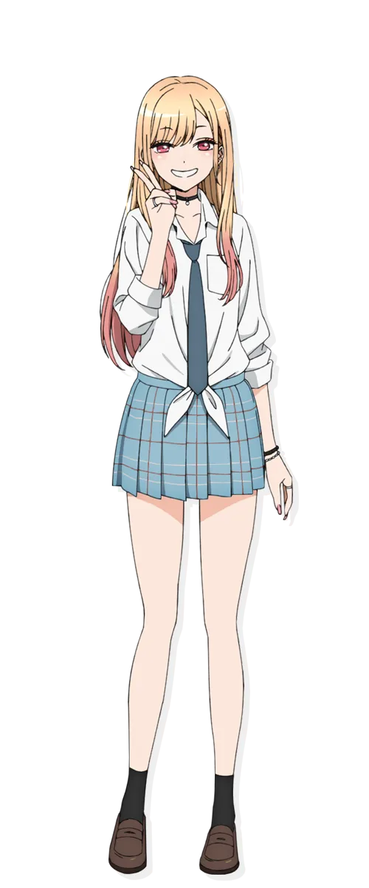

게임 기획 & 캐릭터 메이킹 스터디
사례 분석 샘플
외형, 성격, 취미, 습관 등
캐릭터를 구성하는 모든 특징
장르적으로 정형화된 껍데기
(예: 츤데레, 갸루, 먼치킨)
캐릭터의 모든 요소를 낱낱이 분해하여 나열한다.
템플릿(클리셰)에 해당하는 요소를 강제로 삭제한다.
남은 '알맹이'와 '템플릿'의 화학 반응을 분석한다.
(그 비스크 돌은 사랑을 한다)
"단순히 예쁜 갸루라서 인기가 많았을까요?
그녀를 낱낱이 분해해보겠습니다."

관찰 가능한 '객관적 사실'만을 편집증적으로 나열합니다.
잘하고 싶은데 능력이 없으니 괴로워함
👉 남주인공(장인)이 그녀의 인생에 개입할 명분이 됨
템플릿은 알맹이를 감추는 것이 아니라, 증폭시키고 정당화한다.
템플릿은 유저를 부르는 미끼이고,
알맹이는 유저를 잡아두는 닻이다.
템플릿을 지웠더니 남는 게 없는 '무색무취' 캐릭터의 구제 방법은?
반대로 '알맹이'가 너무 강해서 템플릿(장르적 재미)을 파괴하는 경우는?
우리 프로젝트의 캐릭터는 어떤 '템플릿'을 입고 있으며, 어떤 '알맹이'를 숨기고 있는가?